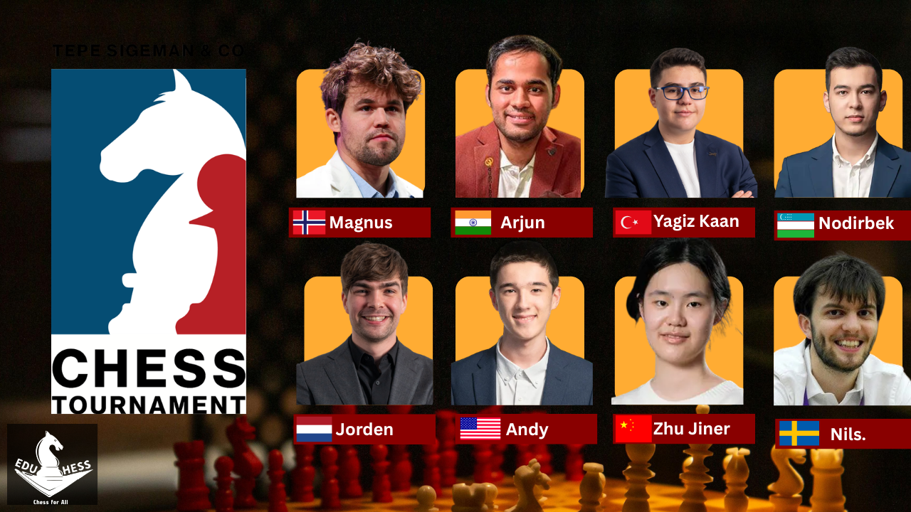

Summary: The TePe Sigeman & Co Chess Tournament 2026 took place at the Elite Plaza Hotel, Malmö, Sweden from May 1–7, 2026. Eight of the world's strongest grandmasters contested a single round-robin at classical time controls. After seven rounds of thrilling chess — packed with upsets, blunders, brilliancies, and last-round drama — Magnus Carlsen and Arjun Erigaisi finished level on points, forcing a blitz tiebreak. Carlsen, the world's No. 1, won 2-1 in the tiebreak games to claim the title. Teenage Turkish prodigy Yagiz Kaan Erdogmus (14) dazzled everyone with a 2700+ performance. India's chess is on the rise. The "final boss" is still Magnus Carlsen.
Tournament Overview
What is the TePe Sigeman Chess Tournament?
Imagine eight of the world's best chess players locked together in a beautiful hotel in Sweden for a week, playing one game a day, with no shortcuts and no second chances. That is exactly what the TePe Sigeman & Co Chess Tournament is — and the 2026 edition was one of the most gripping in recent memory.
The tournament is sponsored by TePe, the Swedish dental hygiene company, and Sigeman & Co, a Swedish law firm. It has been running since 1995 and is one of Sweden's premier chess events.
Key facts at a glance
- Dates: May 1–7, 2026
- Venue: Elite Plaza Hotel, Malmö, Sweden
- Format: 8-player single round-robin
- Time control: 90 min + 30 min with 30-second increment from move one; no draw agreements before move 40
- Rounds: 7 rounds
- Winner: Magnus Carlsen 🇳🇴
The eight players
The 2026 field was exceptional, featuring the world No. 1 and three other top-20 players, along with two teenage prodigies who stole the show:

Day-by-Day Progression
Round 1 – May 1: The Quiet Before the Storm
The tournament opened with some early action but no games involving the big names ended decisively. The first winners of the event were Nodirbek Abdusattorov and Andy Woodward. Carlsen drew his opener, leaving the field surprisingly even from the start.
Round 2 – May 2: Carlsen Fires the Benoni!
Round 2 saw the day's only decisive result — a Carlsen win. The Norwegian legend played the Benoni Defense with the black pieces against Nils Grandelius — a sharp, aggressive opening that surprised his opponent. Carlsen himself said: "That was a fun game, for sure!" Meanwhile, Abdusattorov had three opportunities to beat Andy Woodward but couldn't find the most precise moves. After Round 2, Carlsen, Abdusattorov and Woodward shared the lead at 1.5 points each.
Round 3 – May 3: The Teenagers Arrive!
Round 3 was the round where the two prodigies — Erdogmus and Erigaisi — announced themselves with wins. Erdogmus defeated Zhu Jiner (Women's World No. 4 — an incredible scalp for a 14-year-old) and continued climbing the live ratings list. Arjun Erigaisi beat Grandelius to return to the world top ten. Suddenly five players were tied at the top.
Round 4 – May 4: Shock! Carlsen Falls to Van Foreest!
Round 4 was the most dramatic of the first half. Three decisive games on the same day — and the biggest shock was that Carlsen lost. Dutchman Jorden van Foreest beat the world's No. 1 in an 88-move grinding endgame. Van Foreest had never beaten Carlsen in classical chess before. Meanwhile, Erdogmus beat Grandelius and moved into sole first place as the only player on a +2 score. The 14-year-old was making top-level chess look like child's play.
Round 5 – May 5: Carlsen Bounces Back; Arjun Joins the Lead
After his painful loss, Carlsen bounced back by beating Zhu Jiner in what he called an "incredibly shaky" game. He was half a point behind the leaders but still alive. Arjun Erigaisi pounced on a blunder by Van Foreest to win and share the lead with Erdogmus at 3.5/5. Woodward played an epic 104-move draw with Erdogmus — a marathon effort by the young American.
Round 6 – May 6: Arjun Takes Sole Lead; Magnus Keeps Chasing
With two rounds left, Arjun Erigaisi ground out a 67-move win with the black pieces against Zhu Jiner to become the sole leader at 4.5/6. Carlsen also won, using the iconic King's Indian Defense to defeat Andy Woodward. Both players were winning with the black pieces on the same day. Erdogmus drew with Abdusattorov, sharing second with Carlsen at 4/6.
Round-by-Round Summary
- R1: Abdusattorov wins, Woodward wins → Leaders: Abdusattorov, Woodward (1/1)
- R2: Carlsen beats Grandelius (Benoni!) → Leaders: Carlsen, Abdusattorov, Woodward (1.5)
- R3: Erdogmus & Arjun win their first games → 5-way tie at 2/3
- R4: Van Foreest beats Carlsen (!); Erdogmus wins → Erdogmus sole leader (3/4)
- R5: Carlsen beats Zhu; Arjun beats Van Foreest → Arjun & Erdogmus (3.5/5)
- R6: Arjun beats Zhu; Carlsen beats Woodward (KID) → Arjun sole leader (4.5/6)
- R7: Carlsen beats Erdogmus; Arjun draws → TIE → Blitz Tiebreak!
Final Round Drama – May 7
How the final round unfolded
The final round started at 12:00 noon in Sweden (3:30 PM in India — Indian fans were glued to their screens). The maths were simple: Arjun faced Andy Woodward and needed only a draw to guarantee at least a tiebreak. Carlsen faced Erdogmus and needed a win to have any chance of the title.
Carlsen vs. Erdogmus
This was always going to be a fascinating encounter — the world's greatest player against a 14-year-old prodigy being called a future world champion. The game started quietly, with queens leaving the board as early as move six. Carlsen ground away patiently, building pressure slowly and methodically. Then Erdogmus, under relentless positional pressure, misstepped — and suddenly found himself in a lost position. Carlsen converted clinically. Patient, precise, and utterly ruthless.
Arjun vs. Woodward
While Carlsen was winning, Arjun's opening choice went badly wrong and he found himself in a terrible position. But Arjun showed the brilliance and resilience that has made him one of the world's top players. He fought back from a nearly lost position, finding creative and resourceful moves to hold on. Woodward, so close to a stunning victory, couldn't deliver the killing blow. The game ended in a draw — leaving Arjun and Carlsen tied on 5 points each, with Erdogmus and Abdusattorov a point behind in shared third.
The Blitz Tiebreak — Sudden Death in Malmö
Tiebreak format
After seven rounds of slow, classical chess, the two players had to think at lightning speed. The tiebreak format was as follows:
- Two 3+2 blitz games — each player gets 3 minutes with a 2-second increment per move.
- If still tied: sudden-death games are played; White gets 2.5 minutes, Black gets 3 minutes.
- The match continues with alternating colors until someone wins a game.
Tiebreak Game 1: Carlsen Strikes First
Carlsen's experience in fast chess — he is a former World Rapid and Blitz Champion many times over — showed immediately. Arjun made an error under time pressure, and Carlsen converted efficiently. Carlsen 1 – Arjun 0.
Tiebreak Game 2: Arjun Fights Back!
Down in the match, Arjun showed his class. The Indian grandmaster played brilliantly, outplaying Carlsen in sharp complications and leveling the score. This was the moment that had Indian fans jumping from their seats. Carlsen 1 – Arjun 1.
Sudden-Death Game: Carlsen Wins the Title!
Arjun had the black pieces in sudden-death, meaning he had 3 minutes to Carlsen's 2.5 minutes — a tiny advantage. But Carlsen, playing as White, navigated the position brilliantly and converted the win with speed and precision that only comes from decades of elite chess.
Magnus Carlsen wins the 2026 TePe Sigeman Chess Tournament!
"I loved it! I would say I enjoyed more or less everything about it. Great atmosphere, and it was fun to play, and really, really exciting in the end. It was a fantastic experience! Except for the game against Zhu Jiner, where I had a really, really tough day."
— Magnus Carlsen, post-tournament interview
Final Standings
The final standings after 7 rounds (plus tiebreak) were as follows:
- Magnus Carlsen 🇳🇴 — 5/7 + Tiebreak win (1st Prize)
- Arjun Erigaisi 🇮🇳 — 5/7 (2nd Prize)
- Yagiz Kaan Erdogmus 🇹🇷 — 4/7 (3rd Prize, shared)
- Nodirbek Abdusattorov 🇺🇿 — 4/7 (3rd Prize, shared)
- Jorden van Foreest 🇳🇱 — 3.5/7
- Andy Woodward 🇺🇸 — 3/7
- Zhu Jiner 🇨🇳 — 2.5/7
- Nils Grandelius 🇸🇪 — 2/7
TePe Sigeman does not publicly disclose the full prize fund breakdown, but the tournament is part of the 2026–27 FIDE Grand Prix Circuit, meaning all results contribute to players' Grand Prix standings.
Player Performances — The Stars of Malmö
Magnus Carlsen — The Comeback King
There is a reason Magnus Carlsen is the world's No. 1. Despite suffering a shock defeat to Van Foreest in Round 4, he did not panic. He won his next three classical games in a row — a remarkable burst of energy that dragged him back into contention. In the blitz tiebreak, where many elite classical players struggle, Carlsen showed why he has dominated rapid and blitz chess too.
For those wondering about Carlsen's relationship with classical chess — he famously did not defend his World Chess Championship title in 2023 — this tournament was a reminder that when he chooses to play, he still dominates.
"He's going to shed a few points with every draw, but he'll find a way to do battle. It's not like the first year or even the first decade he's facing this problem, so he knows what it is to outrank his opponents by a lot!"
— GM Viswanathan Anand, commenting during Round 1 broadcast
Arjun Erigaisi — India's Rising Star
Arjun was arguably the player of the tournament. He led the standings for most of the second half, climbed from world No. 11 to No. 7 on the live ratings list, and showed the aggressive, fighting style that has made him India's next big chess hope. His win over Van Foreest, his defeat of Grandelius, and his incredible escape against Woodward in the final round all showed incredible resilience. The tiebreak loss to Carlsen was heartbreaking — but India's chess fans have every reason to feel proud.
Yagiz Kaan Erdogmus — 14 Years Old and Already 2700+!
The story of this tournament is surely Yagiz Kaan Erdogmus. Born in Turkey, just 14 years old, trained by the great Shakhriyar Mamedyarov, Erdogmus arrived in Malmö already inside the world's top 30. He left it with an even higher rating of 2713.1 — after a 5.1-point gain. He led the tournament outright after Round 4 and shared third at the end.
He also faced the "final boss" — Carlsen — in the decisive final round and lost, just as he had lost to Carlsen in the 2025 World Rapid Championship. But every time he faces the greatest player of all time, he learns. As commentators noted: "Carlsen is the final boss for now, but Erdogmus may well be his successor."
Historical Context — About the TePe Sigeman Tournament
The TePe Sigeman & Co Chess Tournament has been held in Malmö, Sweden since 1995 — making it one of the longest-running annual elite chess events in the world. Over the decades it has attracted some of the greatest players in history.
- 1995: Tournament founded in Malmö. Early editions featured Scandinavian and European stars.
- 2000s: The event grew in prestige, regularly attracting world top-10 players. Carlsen played here as early as 2004 — but couldn't win back then.
- 2024: Nodirbek Abdusattorov won — the defending champion heading into 2026.
- 2025: Javokhir Sindarov won the 30th anniversary edition. Erdogmus finished half a point behind.
- 2026: Magnus Carlsen finally wins TePe Sigeman — 22 years after his first attempt in 2004. The 2026 edition is part of the FIDE Grand Prix Circuit.
What's Next for Each Player?
- Magnus Carlsen: Norway Chess 2026, just 18 days after Malmö — 10 more classical games in front of his home crowd in Oslo.
- Arjun Erigaisi: Now World No. 7 and rising. Watch for him in upcoming Grand Prix events and the FIDE Circuit.
- Yagiz Kaan Erdogmus: At 14, already inside the world's top 30 with a rating of 2713. Every tournament is a new learning opportunity against the very best.
- Nodirbek Abdusattorov: Undefeated but winless after Round 1. The world No. 4 will be looking to convert his solid results into victories at upcoming events.
- Jorden van Foreest: Returns to the Dutch circuit with his confidence sky-high after achieving something few players can boast — a first-ever classical win over Magnus Carlsen.
- Andy Woodward: The young American heads back to the US circuit with big scalps and bigger lessons from an impressive performance in Malmö.
Lessons for Young Players
The 2026 TePe Sigeman Chess Tournament was, simply put, a gift to chess fans everywhere. It had everything: a legendary champion bouncing back from defeat, an Indian superstar leading from the front, a 14-year-old Turkish prodigy playing at 2700+ level, surprising upsets, a final-round thriller, and a dramatic blitz tiebreak to decide it all.
For young chess players, the lessons from Malmö are clear. Carlsen teaches us: never give up after a loss; three wins in a row are always possible. Arjun teaches us: consistency and fighting spirit can take you to the top. Erdogmus teaches us: age is just a number — what matters is preparation, courage, and love for the game.
"So Carlsen had done what he didn't manage back in 2004 — win TePe Sigeman Chess. They say you have to come through adversity to really appreciate success, and that's what we'd seen this year in Malmo."
— Chess.com, post-tournament report
Article current as of 7 May 2026. All results are final.